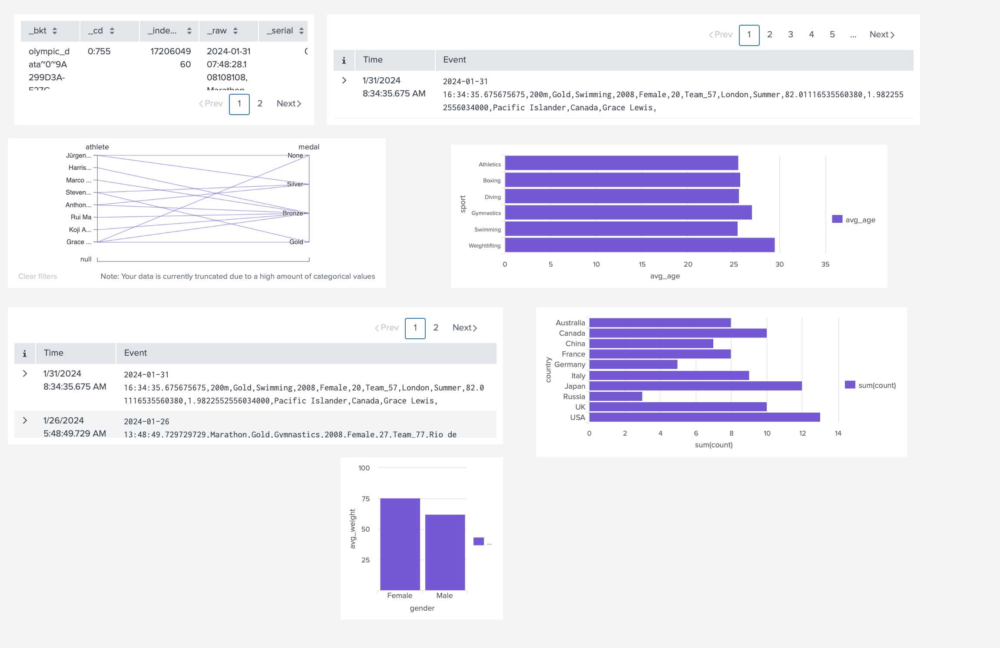

Splunk Practice Exercises
- Welcome to your Splunk Practice Exercise. As you dive in to the Splunk Modules, you may use this practice questions as a guide to test your learnings. Follow the instructions below to complete the practice exercise. This will serve as a guide for the upcoming Splunk Practical Assessment.
Directions:
Log in to the Splunk Instance
- Access the Splunk instance at the following URL: Splunk Practical Assessment. Username and password will be provided by the proctor.
Search and Reporting
- Instructions: Use the Search and Reporting app to answer the following questions. The index name is "olympic_data" and the source type is "oly_src". The time-range will be "All time". Create and run the necessary SPL (Search Processing Language) queries to find the required data. Verify your answers using the provided solutions.
Find all events that took place in the country of Japan
Show Answer
index="olympic_data" sourcetype="oly_src" country="Japan"
Find all events from the year 2024
Show Answer
index="olympic_data" sourcetype="oly_src" date_year=2024
Extract and display the athlete and medal fields for all events
Show Answer
index="olympic_data" sourcetype="oly_src" | table athlete, medal
Calculate the average age of athletes for each sport.
Show Answer
index="olympic_data" sourcetype="oly_src" | stats avg(age) as avg_age by sport
Find all female athletes who won a gold medal.
Show Answer
index="olympic_data" sourcetype="oly_src" gender="female" medal="gold"
Create a bar chart showing the number of medals won by each country.
Show Answer
index="olympic_data" sourcetype="oly_src" | stats count by country, medal | chart sum(count) by country
Find the average weight of athletes who participated in Swimming" events and group the results by gender.
Show Answer
index="olympic_data" sourcetype="oly_src" sport="Swimming" | stats avg(weight) as avg_weight by gender
Dashboarding
- The series of steps on how to create a dashboard in Splunk is shown below. This will serve as your guide in creating dashboard for your final output.
Step 1
From Search and Reporting App, click dashboards

Step 2
From the dashboards tab, click "Create New dashboard"

Step 3
From the panel, you can use any name for the dashboard title. For the permission, it must be "Shared in App". You must also choose dashboard studio with absolute layout.

Step 4
After creating, you'll be directed to the landing page. From there you can select the visualization tool that you'll be using.

Step 5
Once the visualization tool has been selected, you must add your query by clicking " + Create search".

Step 6
Lastly, add your query on the search bar on the top right and click save.

Final Output
- Direction: From your results above, you are tasked to use the following visualizations in representing your answers.
Info
This is not graded. It will just serve as your guide for your upcoming practical assessment.
Table - Find all events that took place in the country of Japan
Events - Find all events from the year 2024
Parallel Coordinates - Extract and display the athlete and medal fields for all events
Bar - Calculate the average age of athletes for each sport.
Events - Find all female athletes who won a gold medal.
Bar - Create a bar chart showing the number of medals won by each country.
Column - Find the average weight of athletes who participated in Swimming" events and group the results by gender.
- Your final output should look like this:
